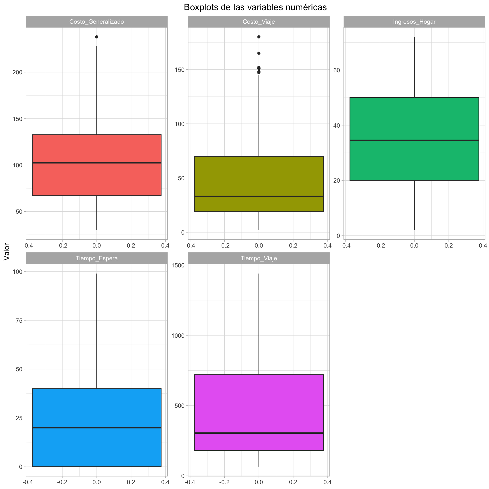
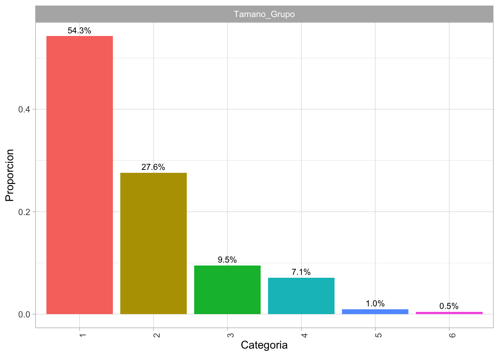
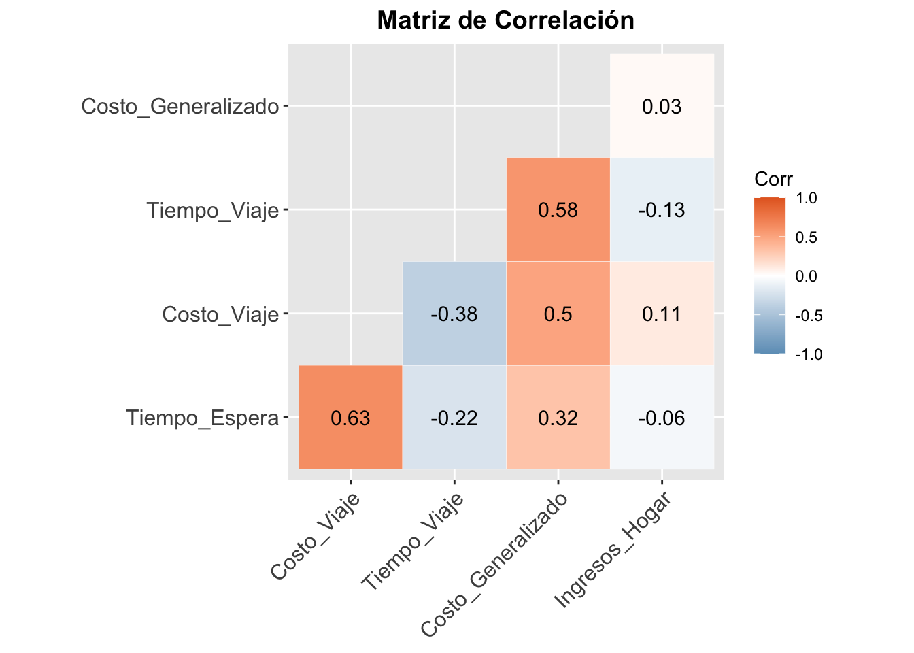
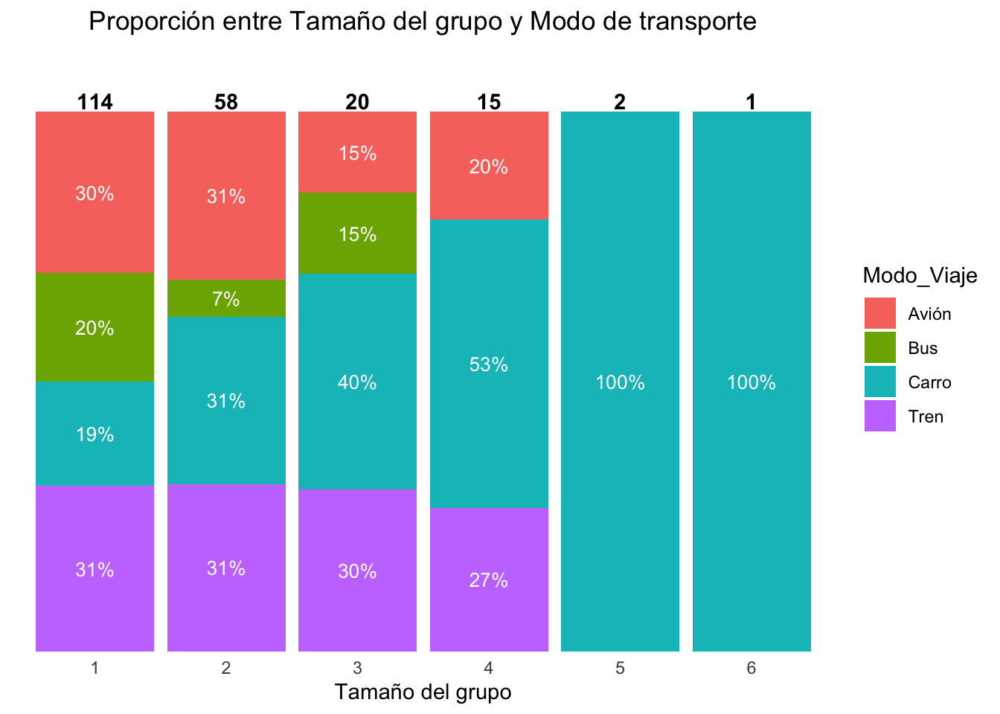
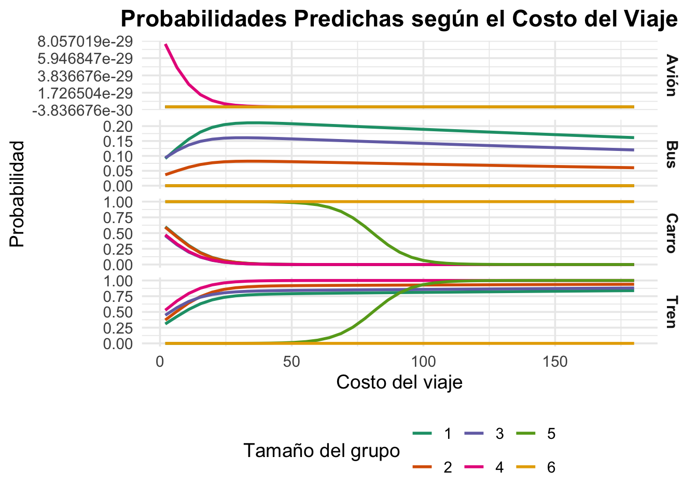

| Variables | Tipo_Variable | Descripción |
|---|---|---|
| Tiempo_Espera | Cuantitativa | Tiempo de espera en terminal |
| Costo_Viaje | Cuantitativa | Costo del viaje |
| Tiempo_Viaje | Cuantitativa | Tiempo de viaje |
| Costo_Generalizado | Cuantitativa | Costo generalizado del viaje |
| Ingresos_Hogar | Cuantitativa | Ingresos del hogar |
| Tamano_Grupo | Ordinal | Tamaño del grupo que viaja |
| Modo_Viaje | Nominal/Variable objetivo | Modo de transporte |
Taller 3 - Modelo Regresión Multinomial
0. Información general
En este trabajo se identificarán qué factores inciden en la preferencia de modo de transporte: Avión, Tren, Bus y Carro.
Este problema es idóneo para un modelo de regresión multinomial (MNL) porque:
La variable de respuesta, Modo_Viaje, es nominal. No hay un orden natural entre las categorías (el Avión no es inherentemente mejor o peor que el Carro, o el Tren es mejor o peor que Bus, entre otros escenarios ).
Hay más de dos categorías, lo que descarta el uso de modelos de regresión logística binaria.
La categoría base para la interpretación del modelo, según la ordenación alfabética por defecto de R, será Avión. Todas las comparaciones se realizarán con respecto a esta categoría de referencia.
Además, Se presta especial atención a la estructura de los datos: para atributos específicos por alternativa (tiempo, costo) es imprescindible conservar el formato long (una fila por alternativa por individuo) y una variable binaria Choice que indique la alternativa escogida.
Las variables a analizar son las siguientes:
1. Análisis explora torio
1.1. Revisión de datos faltantes
| x | |
|---|---|
| Modo_Viaje | 0 |
| Tiempo_Espera | 0 |
| Costo_Viaje | 0 |
| Tiempo_Viaje | 0 |
| Costo_Generalizado | 0 |
| Ingresos_Hogar | 0 |
| Tamano_Grupo | 0 |
No se identificaron datos faltantes en el conjunto de datos, lo que permite un análisis completo sin necesidad de imputación.
1.2. Resumen de las variables
| Modo_Viaje | Tiempo_Espera | Costo_Viaje | Tiempo_Viaje | Costo_Generalizado | Ingresos_Hogar | Tamano_Grupo | |
|---|---|---|---|---|---|---|---|
| Avión:58 | Min. : 0.00 | Min. : 2.0 | Min. : 65.0 | Min. : 30.0 | Min. : 2.00 | 1:114 | |
| Bus :30 | 1st Qu.: 0.00 | 1st Qu.: 19.0 | 1st Qu.: 180.0 | 1st Qu.: 67.0 | 1st Qu.:20.00 | 2: 58 | |
| Carro:59 | Median :20.00 | Median : 33.0 | Median : 305.0 | Median :102.5 | Median :34.50 | 3: 20 | |
| Tren :63 | Mean :25.01 | Mean : 47.4 | Mean : 430.8 | Mean :103.8 | Mean :34.55 | 4: 15 | |
| NA | 3rd Qu.:40.00 | 3rd Qu.: 70.0 | 3rd Qu.: 720.0 | 3rd Qu.:132.8 | 3rd Qu.:50.00 | 5: 2 | |
| NA | Max. :99.00 | Max. :180.0 | Max. :1440.0 | Max. :238.0 | Max. :72.00 | 6: 1 |
Conversión a factores: Las variables Tamano_Grupo y Modo_Viaje se convirtieron a factores. Se aclara que Tamano_Grupo es ordinal (los grupos tienen un orden de tamaño) y Modo_Viaje es nominal (sin orden).
Hallazgos Clave: Existe una alta correlación entre Costo_Generalizado y (Costo_Viaje y Tiempo_Viaje), Costo_Generalizado es una variable compuesta de Costo_Viaje y Tiempo_Viaje, lo que genera una multicolinealidad que sesgaría el modelo. Por lo tanto, se eliminará esta variable.
Variables numéricas

Los histogramas y boxplots permiten observar que:
Tiempo_Espera: La distribución de esta variable está sesgada a la derecha, con la mayoría de los valores concentrados en tiempos de espera bajos y algunos viajes con tiempos de espera significativamente más largos.
Costo_Viaje: De manera similar, se espera una distribución sesgada a la derecha, con muchos viajes de bajo costo y una cola de viajes más caros (probablemente los aéreos).
Tiempo_Viaje: La distribución de esta variable podría ser bimodal, con un pico para los viajes cortos (en carro o bus) y otro para los viajes largos (en avión).
Ingresos_Hogar: La distribución de los ingresos suele estar sesgada positivamente, con la mayoría de los hogares en rangos de ingresos medios y bajos, y una pequeña fracción de hogares con ingresos muy altos.
Variables cualitativas

Hallazgos del Análisis de Variables Cualitativas:
Dominio de Grupos Pequeños: La mayoría de las observaciones en el dataset corresponden a grupos de viaje pequeños. Se puede observar que los grupos de 1 o 2 personas son los más frecuentes en la muestra, representando la mayor proporción de los datos.
Frecuencia Decreciente: A medida que el tamaño del grupo aumenta, su frecuencia en el dataset disminuye significativamente. Los grupos de 5 o 6 personas son considerablemente menos comunes.
Relevancia para el Modelo: Este análisis exploratorio es crucial, ya que la variable Tamano_Grupo es un factor clave en el modelo de regresión multinomial. La distribución de esta variable indica que el modelo tendrá más información para estimar la probabilidad de elección de transporte para grupos pequeños que para grupos grandes.
1.3. Análisis bivariado
Variables numéricas vs. Modo de viaje
Hallazgos del Análisis Bivariado:
Relación Costo-Tiempo vs. Modo de Viaje: Los boxplots muestran que los viajeros que eligen avión tienen los costos más altos y los tiempos más cortos, mientras que los que eligen carro tienen los costos más bajos y los tiempos más largos. Esto es consistente con la idea de que los viajeros balancean el costo y la eficiencia.
Impacto de los Ingresos: Los ingresos del hogar son notablemente más altos para quienes eligen el avión, lo que sugiere que una mayor capacidad económica se asocia con una preferencia por opciones de viaje más rápidas.
Relación Tiempo de espera vs Modo de viaje: se evidencia que las personas que viajan en avión tienen mayores tiempos de espera vs los otros medios de transporte. Además, los carros no tienen tiempo de espeera. Esto úlitmo podría sesgar el modelo, por ende, no se utilizará esta variable.

Hallazgos de la Matriz de Correlación:
Multicolinealidad Crítica: El hallazgo más importante es la correlación media-alta entre el Costo_Generalizado y el Tiempo_Viaje. Esta relación podría confirma una multicolinealidad. Por lo tanto, el Costo_Generalizado debe ser excluido del modelo de regresión para evitar estimaciones sesgadas y una interpretación incorrecta de los resultados.
Relaciones Intuitivas: Existe una correlación moderada entre Costo_Viaje y Tiempo_Espera (r=0.63). Esto tiene sentido, ya que los viajes más costosos (como los vuelos) suelen requerir más tiempo de espera en la terminal.
Ausencia de Correlaciones Fuertes: Fuera de la multicolinealidad detectada, no hay otras correlaciones fuertes entre las variables. Esto es positivo, ya que permite que el modelo estime los efectos individuales de cada variable de manera más limpia.
Varables cualitativas vs. Modo de viaje

Hallazgos Clave de la Relación entre Tamaño del grupo y Modo de transporte:
El Carro domina para grupos grandes: El hallazgo más significativo es que, a medida que el tamaño del grupo aumenta, el carro se convierte en el modo de transporte abrumadoramente predominante. Esto se debe a la eficiencia logística y la reducción del costo por persona.
Avión y Tren para grupos pequeños: El avión y el tren son opciones más populares para grupos de una o dos personas. La frecuencia de estas opciones disminuye drásticamente a medida que el grupo se hace más grande, lo que sugiere que son menos atractivas o más costosas para viajes en grupo.
El Bus es una opción de nicho: El bus tiene una presencia relativamente baja en todos los tamaños de grupo, lo que lo posiciona como una opción menos preferida en comparación con las demás.
2. Modelo multinomial
# weights: 40 (27 variable)
initial value 291.121816
iter 10 value 147.782539
iter 20 value 106.601389
iter 30 value 103.150919
iter 40 value 102.805410
iter 50 value 102.803334
final value 102.803331
converged
Coefientes (Intercept) Costo_Viaje Tiempo_Viaje Ingresos_Hogar Tamano_Grupo.L
Bus 46.15633 -4.112399 0.5617427 -0.1735036 -88.24744
Carro 78.77012 -4.276600 0.5633502 -0.1358230 -30.83879
Tren 69.46713 -4.081489 0.5594685 -0.2012959 -60.33678
Tamano_Grupo.Q Tamano_Grupo.C Tamano_Grupo^4 Tamano_Grupo^5
Bus 24.42756 59.00828 -4.453353 -99.21981
Carro 12.70779 36.21582 21.083529 -48.43903
Tren -10.30403 25.61379 19.218698 -47.75568
P-values (Intercept) Costo_Viaje Tiempo_Viaje Ingresos_Hogar Tamano_Grupo.L
Bus 0 0 0 0 0
Carro 0 0 0 0 0
Tren 0 0 0 0 0
Tamano_Grupo.Q Tamano_Grupo.C Tamano_Grupo^4 Tamano_Grupo^5
Bus 0 0 0 0
Carro 0 0 0 0
Tren 0 0 0 02.1. Análisis de los coeficientes y p-values
Se estima el modelo con las variables predictoras Costo_Viaje, Tiempo_Viaje, Ingresos_Hogar y Tamano_Grupo, y Avión como la categoría base. Con base en los p-values obtenidos, se observa que las variables incluidas en el modelo son estadísticamente significativas (p < 0.05), lo cual indica que aportan información relevante para explicar la elección del modo de viaje.
- Costo de viaje: Un aumento en una unidad del costo de viaje, se asocia con una disminución en las probabilidades logarítimicas de escoger bus versus avión en una cantidad de 4.11, carro versus avión de 4.28 y tren versus avión de 4.08.
- Tiempo de viaje: Un aumento en una unidad del tiempo de viaje, aumenta la probabilidad logarítimica de escoger bus versus avión en una cantidad de 0.56, carro versus avión de 0.56 y avión versus tren de 0.56.
- Ingresos del hogar: En cuanto a los ingresos del hogar, un aumento en una unidad de este factor se asocia con una disminución en las probabilidades logarítimicas de escoger bus versus avión en una cantidad de 0.17, carro versus avión de 0.14 y tren versus avión de 0.20.
- Tamaño del grupo: Por último, un aumento en una unidad del tamaño del grupo a viajar disminuye las probabilidades logarítimicas de escoger bus versus avión enm una cantidad de 88.25, carro versus avión en una cantidad de 30.84 y tren versus avión de 60.34.
2.2. Odds Ratio
(Intercept) Costo_Viaje Tiempo_Viaje Ingresos_Hogar Tamano_Grupo.L
Bus 1.110297e+20 0.01636847 1.753726 0.8407142 4.727406e-39
Carro 1.619677e+34 0.01388981 1.756547 0.8729972 4.044674e-14
Tren 1.476355e+30 0.01688231 1.749742 0.8176705 6.252718e-27
Tamano_Grupo.Q Tamano_Grupo.C Tamano_Grupo^4 Tamano_Grupo^5
Bus 4.062120e+10 4.236145e+25 1.163948e-02 8.116778e-44
Carro 3.303097e+05 5.349701e+15 1.433706e+09 9.187510e-22
Tren 3.349776e-05 1.330237e+11 2.221133e+08 1.819588e-21Hallazgos del Modelo
Los Odds Ratios nos permiten entender el impacto de cada variable en la elección del modo de viaje en comparación con el avión.
Costo de Viaje: en todos los casos, los odds son mneores a 1. Esto indica que por cada unidad adicional en el costo, las odds de elegir Tren, Bus y Carro sobre Avión disminuyen, lo que indica que a medida que el viaje se encarece, las personas son más propensas a elegir el Avión, que ya se considera la opción más cara. Específicamente, las probabilidades de elegir bus son un 98.4% menores que las de elegir avión, las probabilidades de elegir carro son un 98.6% menores y las probabilidades de elegir tren son un 98.3% menores.
Tiempo del Viaje: Todos los valores son mayores que 1. Esto significa que por cada unidad que aumenta el tiempo de viaje, la probabilidad de elegir un modo de transporte terrestre sobre el avión aumenta. Las probabilidades para los tres modos de transporte son parecidas, y son aproximadamente 75% mayores que las de elegir avión.
Ingresos del Hogar: Por cada mil dólares adicionales en los ingresos, las odds de elegir Bus sobre Avión disminuyen en un 16%. Esto sugiere que a mayor ingreso, las personas se inclinan más por el transporte aéreo, quizás valorando más el tiempo que el costo. Y de manera similar, por cada mil dólares adicionales en los ingresos, los odds de elegir los otros medios de transporte disminuyen sobre elegir avión: el del carro disminuyen un 13% y el de elergir tren disminuyen un 18%.
Tamaño del Grupo: viajar en grupo hace que las opciones terrestres, especialmente el carro, sean mucho más atractivas en comparación con el avión.
2.3. Análisis marginal
| term | group | contrast | estimate | std.error | statistic | p.value | s.value | conf.low | conf.high |
|---|---|---|---|---|---|---|---|---|---|
| Costo_Viaje | Avión | dY/dX | 0.0000000 | 0.0000000 | 1.835362e+00 | 0.0664520 | 3.9115433 | 0.0000000 | 0.0000000 |
| Costo_Viaje | Bus | dY/dX | 0.0034838 | 0.0013013 | 2.677195e+00 | 0.0074242 | 7.0735579 | 0.0009333 | 0.0060342 |
| Costo_Viaje | Carro | dY/dX | -0.0144705 | 0.0016538 | -8.749793e+00 | 0.0000000 | 58.6988235 | -0.0177119 | -0.0112291 |
| Costo_Viaje | Tren | dY/dX | 0.0109867 | 0.0013141 | 8.360844e+00 | 0.0000000 | 53.8342189 | 0.0084112 | 0.0135623 |
| Ingresos_Hogar | Avión | dY/dX | 0.0000000 | 0.0000000 | 1.887397e+00 | 0.0591069 | 4.0805292 | 0.0000000 | 0.0000000 |
| Ingresos_Hogar | Bus | dY/dX | 0.0005479 | 0.0012306 | 4.451836e-01 | 0.6561871 | 0.6078210 | -0.0018641 | 0.0029598 |
| Ingresos_Hogar | Carro | dY/dX | 0.0042728 | 0.0010796 | 3.957651e+00 | 0.0000757 | 13.6895314 | 0.0021568 | 0.0063888 |
| Ingresos_Hogar | Tren | dY/dX | -0.0048207 | 0.0012475 | -3.864394e+00 | 0.0001114 | 13.1324141 | -0.0072656 | -0.0023757 |
| Tamano_Grupo | Avión | 2 - 1 | 0.0000000 | 0.0000000 | 1.589138e+00 | 0.1120293 | 3.1580518 | 0.0000000 | 0.0000000 |
| Tamano_Grupo | Avión | 3 - 1 | 0.0000000 | 0.0000000 | -1.519980e+00 | 0.1285161 | 2.9599793 | 0.0000000 | 0.0000000 |
| Tamano_Grupo | Avión | 4 - 1 | 0.0095238 | 0.0000000 | 4.050173e+06 | 0.0000000 | Inf | 0.0095238 | 0.0095238 |
| Tamano_Grupo | Avión | 5 - 1 | 0.0095238 | 0.0000000 | 2.487501e+07 | 0.0000000 | Inf | 0.0095238 | 0.0095238 |
| Tamano_Grupo | Avión | 6 - 1 | 0.0000001 | 0.0000001 | 8.948997e-01 | 0.3708407 | 1.4311285 | -0.0000001 | 0.0000003 |
| Tamano_Grupo | Bus | 2 - 1 | -0.0947621 | 0.0480636 | -1.971598e+00 | 0.0486555 | 4.3612521 | -0.1889651 | -0.0005592 |
| Tamano_Grupo | Bus | 3 - 1 | -0.0156164 | 0.0872240 | -1.790381e-01 | 0.8579078 | 0.2211055 | -0.1865724 | 0.1553396 |
| Tamano_Grupo | Bus | 4 - 1 | -0.1746788 | 0.0306286 | -5.703136e+00 | 0.0000000 | 26.3412501 | -0.2347097 | -0.1146480 |
| Tamano_Grupo | Bus | 5 - 1 | -0.1746788 | 0.0306286 | -5.703136e+00 | 0.0000000 | 26.3412502 | -0.2347097 | -0.1146480 |
| Tamano_Grupo | Bus | 6 - 1 | -0.1746788 | 0.0306286 | -5.703136e+00 | 0.0000000 | 26.3412501 | -0.2347097 | -0.1146480 |
| Tamano_Grupo | Carro | 2 - 1 | 0.0174830 | 0.0499041 | 3.503322e-01 | 0.7260894 | 0.4617810 | -0.0803272 | 0.1152932 |
| Tamano_Grupo | Carro | 3 - 1 | -0.0377621 | 0.0805577 | -4.687580e-01 | 0.6392426 | 0.6455646 | -0.1956522 | 0.1201281 |
| Tamano_Grupo | Carro | 4 - 1 | -0.0022215 | 0.1142994 | -1.943610e-02 | 0.9844932 | 0.0225468 | -0.2262443 | 0.2218013 |
| Tamano_Grupo | Carro | 5 - 1 | 0.4207496 | 0.0305122 | 1.378956e+01 | 0.0000000 | 141.2844166 | 0.3609468 | 0.4805524 |
| Tamano_Grupo | Carro | 6 - 1 | 0.4466213 | 0.0255671 | 1.746863e+01 | 0.0000000 | 224.5784558 | 0.3965108 | 0.4967318 |
| Tamano_Grupo | Tren | 2 - 1 | 0.0772791 | 0.0565179 | 1.367339e+00 | 0.1715190 | 2.5435601 | -0.0334939 | 0.1880521 |
| Tamano_Grupo | Tren | 3 - 1 | 0.0533785 | 0.0984097 | 5.424111e-01 | 0.5875354 | 0.7672524 | -0.1395009 | 0.2462579 |
| Tamano_Grupo | Tren | 4 - 1 | 0.1673765 | 0.1148847 | 1.456909e+00 | 0.1451415 | 2.7844679 | -0.0577933 | 0.3925464 |
| Tamano_Grupo | Tren | 5 - 1 | -0.2555946 | 0.0324663 | -7.872622e+00 | 0.0000000 | 48.0328013 | -0.3192272 | -0.1919619 |
| Tamano_Grupo | Tren | 6 - 1 | -0.2719425 | 0.0294215 | -9.242992e+00 | 0.0000000 | 65.1773414 | -0.3296076 | -0.2142775 |
| Tiempo_Viaje | Avión | dY/dX | 0.0000000 | 0.0000000 | -1.844235e+00 | 0.0651489 | 3.9401152 | 0.0000000 | 0.0000000 |
| Tiempo_Viaje | Bus | dY/dX | 0.0000942 | 0.0000926 | 1.017842e+00 | 0.3087532 | 1.6954741 | -0.0000872 | 0.0002757 |
| Tiempo_Viaje | Carro | dY/dX | 0.0002324 | 0.0000856 | 2.713883e+00 | 0.0066500 | 7.2324364 | 0.0000645 | 0.0004002 |
| Tiempo_Viaje | Tren | dY/dX | -0.0003266 | 0.0000990 | -3.298775e+00 | 0.0009711 | 10.0081259 | -0.0005206 | -0.0001325 |
Hallazgos del Análisis Marginal:
- Costo del viaje
- Bus: El aumento en el costo incrementa ligeramente la probabilidad de elegir bus (+0.35 pp, p<0.01).
- Carro: Una mayor costo reduce significativamente la probabilidad de usar carro (–1.45 pp, p<0.001).
- Tren: El incremento del costo aumenta la probabilidad de usar tren (+1.1 pp, p<0.001).
Conclusión: El carro es el más sensible al costo, mientras bus y tren ganan peso relativo frente al avión.
- Bus: El aumento en el costo incrementa ligeramente la probabilidad de elegir bus (+0.35 pp, p<0.01).
- Ingresos del hogar
- Bus: Sin efecto significativo (p=0.65).
- Carro: A mayor ingreso, aumenta la probabilidad de usar carro (+0.43 pp, p<0.001).
- Tren: Los ingresos más altos reducen la preferencia por tren (–0.48 pp, p<0.001).
Conclusión: Los hogares con más ingresos prefieren el carro frente al tren, mientras el bus permanece estable.
- Bus: Sin efecto significativo (p=0.65).
- Tiempo de viaje
- Bus: Efecto no significativo.
- Carro: Incrementos en tiempo aumentan la probabilidad de elegir carro (+0.023 pp, p<0.01).
- Tren: Pierde atractivo con mayores tiempos de viaje (–0.033 pp, p<0.001).
Conclusión: El tren es más sensible al tiempo, mientras el carro tolera viajes largos.
- Bus: Efecto no significativo.
- Tamaño del grupo
- Bus: Pierde atractivo desde grupos de 2 (–0.095 pp, p≈0.05) y más fuertemente con grupos de 4 a 6 (≈ –0.175 pp, p<0.001).
- Carro: Los grupos grandes prefieren fuertemente el carro (+0.42 a +0.45 pp, p<0.001).
- Tren: Grupos grandes abandonan el tren (–0.26 a –0.27 pp, p<0.001).
- Avión: Efectos marginales pequeños, con aumentos leves en grupos de 4 y 5 (+0.0095 pp).
Conclusión: El carro es el gran ganador en grupos grandes, mientras que bus y tren pierden atractivo.
- Bus: Pierde atractivo desde grupos de 2 (–0.095 pp, p≈0.05) y más fuertemente con grupos de 4 a 6 (≈ –0.175 pp, p<0.001).
Síntesis:
- El costo del viaje afecta negativamente al carro, favoreciendo bus y tren.
- El ingreso del hogar inclina las preferencias hacia el carro.
- El tiempo de viaje penaliza al tren.
- El tamaño del grupo refuerza fuertemente el uso del carro frente al bus y al tren.
2.4. Análisis de las predicciones
Probabilidades medias por cada nivel de tamaño de grupopp.sim$Tamano_Grupo: 1
Avión Bus Carro Tren
1.231788e-56 1.834502e-01 4.383172e-02 7.727181e-01
------------------------------------------------------------
pp.sim$Tamano_Grupo: 2
Avión Bus Carro Tren
5.021822e-49 7.040037e-02 4.285723e-02 8.867424e-01
------------------------------------------------------------
pp.sim$Tamano_Grupo: 3
Avión Bus Carro Tren
3.532199e-69 1.401616e-01 3.008804e-02 8.297503e-01
------------------------------------------------------------
pp.sim$Tamano_Grupo: 4
Avión Bus Carro Tren
4.451402e-30 3.236775e-41 3.127493e-02 9.687251e-01
------------------------------------------------------------
pp.sim$Tamano_Grupo: 5
Avión Bus Carro Tren
1.712114e-35 7.213883e-12 4.443178e-01 5.556822e-01
------------------------------------------------------------
pp.sim$Tamano_Grupo: 6
Avión Bus Carro Tren
7.264613e-49 1.982124e-17 1.000000e+00 3.172226e-10 Hallazgos Clave de las Predicciones por Costo de Viaje:
Los gráficos de probabilidades predichas revelan que el costo del viaje es un factor determinante en la elección del modo de transporte, con efectos opuestos en las opciones de viaje.
Impacto Negativo en Opciones Terrestres: A medida que el costo del viaje aumenta, la probabilidad de elegir el Carro, el Bus o el Tren disminuye de forma constante. Este hallazgo confirma que los viajeros son sensibles al precio y tienden a evitar las opciones más económicas cuando estas se encarecen.
Impacto Positivo en el Transporte Aéreo: Por el contrario, la probabilidad de elegir el Avión aumenta a medida que el costo del viaje se incrementa. Esto se debe a que el avión es la alternativa más costosa del conjunto de datos. El modelo predice que cuando los costos de viaje son elevados (por ejemplo, debido a largas distancias), la probabilidad de que el viajero se decida por la opción aérea es mayor.
Segmentación por Sensibilidad al Costo: El modelo muestra que los usuarios de transporte terrestre son más sensibles al costo, mientras que quienes eligen el avión parecen menos afectados por aumentos en el precio, lo cual podría relacionarse con un perfil de mayor capacidad adquisitiva o con viajes en los que el tiempo cobra más relevancia que el dinero.
Relación Implícita con la Distancia: Dado que los mayores costos suelen asociarse con viajes más largos, es lógico que la opción aérea gane participación en esos escenarios, mientras que los modos terrestres resultan menos competitivos.
Evidencia de Sustitución entre Modos: La caída en la probabilidad de carro, bus y tren se compensa directamente con el aumento del avión, lo que refleja un patrón de sustitución: a medida que un viaje se vuelve más costoso, los viajeros no lo abandonan, sino que cambian de modo de transporte.
Polarización en la Elección: Se observa que el incremento en el costo del viaje polariza las decisiones: los viajeros se alejan progresivamente de las alternativas más económicas y se concentran en la opción aérea, reduciendo la diversidad en las elecciones disponibles.
Gráficos de probabilidades
Hallazgos Grafico probabilidades predichas Costo_Viaje
Relación Inversa para el Carro, Tren y Bus: La probabilidad de elegir el Carro, el Bus o el Tren muestra una clara relación inversa con el Costo_Viaje. A medida que el costo del viaje aumenta, la probabilidad de que un individuo elija cualquiera de estas tres opciones disminuye de forma constante. Este hallazgo es intuitivo: los viajeros son sensibles al precio y prefieren opciones más baratas.
Relación Directa para el Avión: En contraste, la probabilidad de elegir el Avión tiene una relación directa con el Costo_Viaje. A medida que el costo aumenta, la probabilidad de elegir el Avión también se incrementa. Este resultado, aunque pueda parecer contraintuitivo a primera vista, se explica por el hecho de que, en el contexto de este conjunto de datos, el Avión es la alternativa de viaje más costosa. El modelo reconoce que, si un viaje tiene un costo elevado (por ejemplo, debido a la distancia), es más probable que la elección sea el Avión que un viaje en Carro o Bus.
Impacto del Tamaño del Grupo: La faceta por Tamano_Grupo revela que la sensibilidad al costo varía según el número de viajeros. Se puede observar que para grupos más grandes, la probabilidad de elegir el Carro se mantiene relativamente alta incluso con un aumento en el costo, lo que sugiere que el costo por persona sigue siendo más atractivo. Por el contrario, los grupos pequeños son más propensos a cambiar de opción a medida que el costo aumenta.
2.5. Diagnóstico
# weights: 8 (3 variable)
initial value 291.121816
final value 283.758768
convergedPseudo R²: 0.6377087 Log-likelihood modelo nulo: -283.7588 Log-likelihood modelo propuesto: -102.8033 AIC del modelo nulo: 573.5175 AIC del modelo propuesto: 259.6067 BIC del modelo nulo: 583.5589 BIC del modelo propuesto: 349.9786 Matriz de confusión:
Reporte de clasificación:| x | |
|---|---|
| Accuracy | 0.7904762 |
| Kappa | 0.7098081 |
| AccuracyLower | 0.7291179 |
| AccuracyUpper | 0.8434390 |
| AccuracyNull | 0.3000000 |
| AccuracyPValue | 0.0000000 |
| McnemarPValue | NaN |
| Class: Avión | Class: Bus | Class: Carro | Class: Tren | |
|---|---|---|---|---|
| Sensitivity | 1.0000000 | 0.2666667 | 0.8305085 | 0.8095238 |
| Specificity | 1.0000000 | 0.9722222 | 0.9072848 | 0.8299320 |
| Pos Pred Value | 1.0000000 | 0.6153846 | 0.7777778 | 0.6710526 |
| Neg Pred Value | 1.0000000 | 0.8883249 | 0.9319728 | 0.9104478 |
| Precision | 1.0000000 | 0.6153846 | 0.7777778 | 0.6710526 |
| Recall | 1.0000000 | 0.2666667 | 0.8305085 | 0.8095238 |
| F1 | 1.0000000 | 0.3720930 | 0.8032787 | 0.7338129 |
| Prevalence | 0.2761905 | 0.1428571 | 0.2809524 | 0.3000000 |
| Detection Rate | 0.2761905 | 0.0380952 | 0.2333333 | 0.2428571 |
| Detection Prevalence | 0.2761905 | 0.0619048 | 0.3000000 | 0.3619048 |
| Balanced Accuracy | 1.0000000 | 0.6194444 | 0.8688966 | 0.8197279 |
Hallazgos Clave:
El Pseudo R² de McFadden de 0.6378 indica un ajuste del modelo bueno. Por lo tanto, las variables que estamos analizando (costo de viaje, tiempo de viaje, ingresos y tamaño del grupo) explican aproximadamente el 63.8% de la variación en la elección de un modo de viaje.
En cuanto al log-likelihood, que también es una meida que indica qué tan bien se ajusta el modelo a los datos, se comparó con el modelo nulo (no hacer nada). Con base en las métricas, el modelo propuesto es mejor que que el modelo nulo, ya que su valor es menor (en valor abosluto), o más cercano a cero, por lo que el modelo propuesto tiene mejor ajuste.
Tanto el AIC como el BIC evalúan la calidad del modelo, balanceando el ajuste con la complejidad (número de variables). Para ambos criterios, el valor más bajo es el mejor. El modelo propuesto tiene valores de AIC y BIC que son significativamente más bajos que los del modelo nulo. Esto confirma que la complejidad añadida por las variables está más que justificada por la mejora en el ajuste del modelo.
Revisando la matriz de confusión, se puede decir que:
- El modelo es excelente para identificar viajes en avión.
- En cuanto al bus, el modelono es muy bueno, ya que de los 13 datos para bus, el modelo fue capaz de clasificar correctamente 8.
- El modelo presenta un rendimiento muy buen en decir si las personas escogen carro, ya que de 59 registros, el modelo acertó en 49 de ellos. Los fallos se dan principalmente con el Tren (7 casos) y en menor medida con Bus (3 casos).
- Analizando los viajes en tren, el rendimiento del modelo también es bueno. De 63 casos, el modelo acertó en 51 de ellos. El modelo falla confundiéndo las mediciones principalmente con Carro (10 casos) y un poco con Bus (2 casos).
Existe una notable confusión entre los tres medios de transporte terrestre. El modelo tiende a favorecer la predicción de “Tren” cuando tiene dudas entre bus, carro y tren.
En términos globales, la tasa de acierto del modelo es del 79.04%, lo que demuestra una buena capacidad predictiva y es significativa (p-value menor a 0.05). En cuánto al valor de Kappa (0.71), indica que el modelo es robusto.
Por clase, como se vio en la matriz de confusión, el modelo el capaz de predecir perfectamente la clase de avión. Para el carro, el rendimiento es bueno y equilibrado, teniendo un recall (proporción de casos verdaderos acertados) es del 83%, una precisión del 78% y un F1-Score del 80%. En cuánto al tren, el modelo es capaz de decir en un 81% los casos reales de tren, pero cuando el modelo dice que es “Tren”, sólo acierta el 67% de las veces, lo que se concluye que el modelo tiende a “sobre-predecir” esta clase. Por último, el rendimiento para predecir la clase “Bus” no es bueno, tiene un recall de 27%, una precisión del 62% y un F1-Score del 37%.